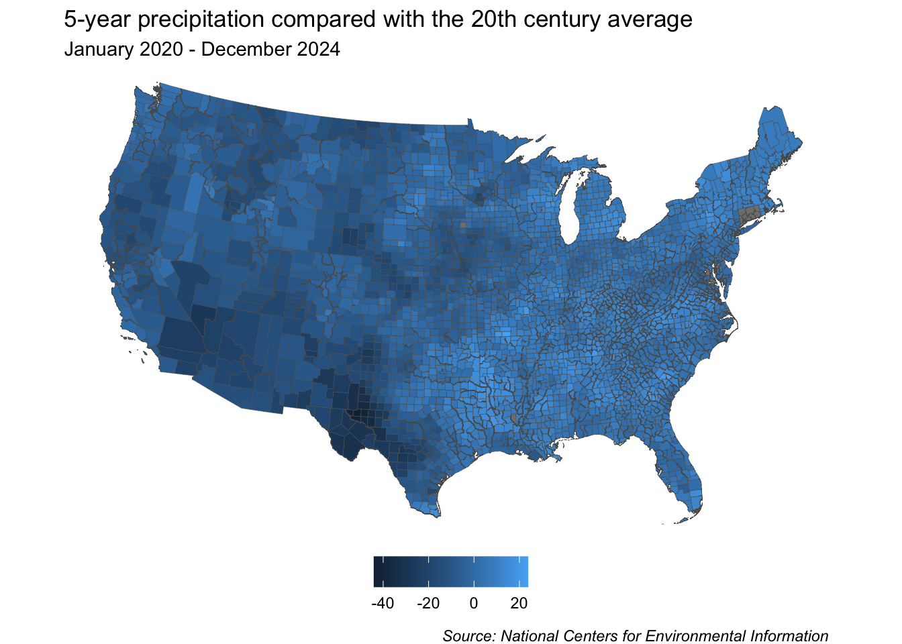
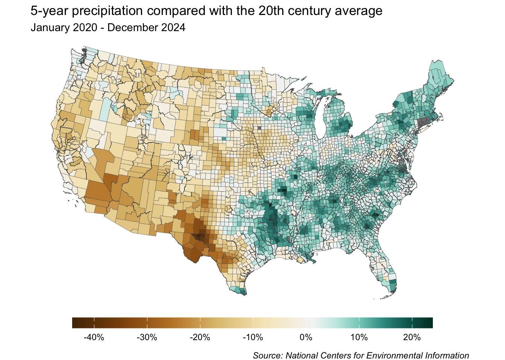
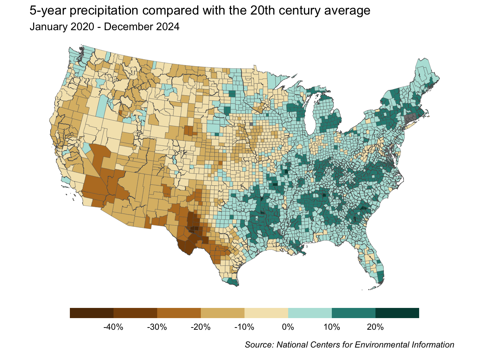

##~~~~~~~~~~~~~~~~~~~~~~~~~~~~~~~~~~~~~~~~~~~~~~~~~~~~~~~~~~~~~~~~~~~~~~~~~~~~~~
## setup ----
##~~~~~~~~~~~~~~~~~~~~~~~~~~~~~~~~~~~~~~~~~~~~~~~~~~~~~~~~~~~~~~~~~~~~~~~~~~~~~~
#..........................load packages.........................
library(tidyverse)
library(tigris)
#.........................get shape data.........................
county_geo <- tigris::counties(class = "sf", cb = TRUE) |> # cb = TRUE to use cartographic boundary files
# shift US to fit AK, HI, PR (we'll be filtering these out though) and transform CRS to USA Contiguous Albers Equal Area Conic (ESRI:102003) ----
shift_geometry()
#....................import precipitation data...................
precip_data <- read_csv(here::here("week5", "data", "county-feb19-jan24-precip.csv"), skip = 4)
##~~~~~~~~~~~~~~~~~~~~~~~~~~~~~~~~~~~~~~~~~~~~~~~~~~~~~~~~~~~~~~~~~~~~~~~~~~~~~~
## data wrangling ----
##~~~~~~~~~~~~~~~~~~~~~~~~~~~~~~~~~~~~~~~~~~~~~~~~~~~~~~~~~~~~~~~~~~~~~~~~~~~~~~
##~~~~~~~~~~~~~~~~~~~~~~~~~~~~
## ~ wrangle geometries ----
##~~~~~~~~~~~~~~~~~~~~~~~~~~~~
county_geo_wrangled <- county_geo |>
# clean up col names ----
janitor::clean_names() |>
# rename county & state cols ----
rename(county = namelsad, state = state_name) |>
# remove states / territories that we don't have precip data for ----
filter(!state %in% c("Alaska", "Hawaii", "District of Columbia",
"United States Virgin Islands", "Puerto Rico", "American Samoa",
"Commonwealth of the Northern Mariana Islands", "Guam")) |>
# capitalize "city" (VA) ----
mutate(county = str_replace(string = county, pattern = " city", replacement = " City"))
##~~~~~~~~~~~~~~~~~~~~~~~~~~~~~~~~~~~~
## ~ wrangle precipitation data ----
##~~~~~~~~~~~~~~~~~~~~~~~~~~~~~~~~~~~~
precip_wrangled <- precip_data |>
# clean up col names ----
janitor::clean_names() |>
# rename county col ----
rename(county = name) |>
# filter out DC ----
filter(!county %in% c("Washington, D.C.")) |>
# update name to match that in county_geo df ----
mutate(county = str_replace(string = county, pattern = "Dona Ana County", replacement = "Doña Ana County")) |>
# coerce precip & 20th centruy avg from chr to numeric ----
mutate(value = as.numeric(value),
x1901_2000_mean = as.numeric(x1901_2000_mean)) |>
# calculate % change ----
mutate(perc_change = ((value - x1901_2000_mean)/x1901_2000_mean)*100) |>
# select, rename, reorder cols ----
select(id, state, county, mean_1901_2000 = x1901_2000_mean, precip = value, perc_change, anomaly_1901_2000_base_period)
##~~~~~~~~~~~~~~~~~~
## ~ join dfs ----
##~~~~~~~~~~~~~~~~~~
# join dfs (be sure to join precip TO sf object, not the other way around) -------
joined_precip_geom <- full_join(county_geo_wrangled, precip_wrangled)
Note
This template follows lecture 5.3 slides. Please be sure to cross-reference the slides, which contain important information and additional context!
Setup
Create map
Create base map
# create base map ----
base_map <- ggplot(joined_precip_geom) +
geom_sf(aes(fill = perc_change), linewidth = 0.1) +
labs(title = "5-year precipitation compared with the 20th century average",
subtitle = "February 2019 - January 2024",
caption = "Source: National Centers for Environmental Information") +
theme_void() +
theme(
legend.position = "bottom",
legend.title = element_blank(),
plot.caption = element_text(face = "italic",
margin = margin(t = 2, r = 0.5, b = 0, l = 0, "lines"))
)
base_map
Create an unclassed map
- create color palette

- build map
# create unclassed map ----
base_map +
scale_fill_gradientn(colors = my_brew_palette11,
labels = scales::label_percent(scale = 1),
breaks = scales::breaks_width(width = 10),
values = scales::rescale(x = c(
min(na.omit(joined_precip_geom)$perc_change),
0,
max(na.omit(joined_precip_geom)$perc_change)))) +
guides(fill = guide_colorbar(barwidth = 15, barheight = 0.75))
Create a classed map
- create color palette

- build map
# classed map with default bins ----
base_map +
scale_fill_stepsn(colors = my_brew_palette10,
labels = scales::label_percent(scale = 1)) +
guides(fill = guide_colorsteps(barwidth = 25, barheight = 0.75))# bins have width of 10 ----
base_map +
scale_fill_stepsn(colors = my_brew_palette10,
labels = scales::label_percent(scale = 1),
breaks = scales::breaks_width(width = 10)) +
guides(fill = guide_colorsteps(barwidth = 25, barheight = 0.75))
# bins have width of 5 ---
base_map +
scale_fill_stepsn(colors = my_brew_palette10,
labels = scales::label_percent(scale = 1),
values = scales::rescale(x = c(
min(na.omit(joined_precip_geom)$perc_change),
0,
max(na.omit(joined_precip_geom)$perc_change))),
breaks = scales::breaks_width(width = 5)) +
guides(fill = guide_colorsteps(barwidth = 25, barheight = 0.75))